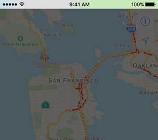

Status Bars 状态栏


状态栏在屏幕的顶端出现，显示与设备当前状态相关的有用信息，比如时间、运营商、网络状态以及电池容量。状态栏上真正显示的信息根据不同的系统设置有所变化。
使用系统提供的状态栏（Use the system-provided status bar.）。用户希望状态栏在系统内部保持一致。不要用自定义的状态替换掉它。


显眼
极简

根据你的app设计选择协调的状态栏颜色（Coordinate the status bar style with your app design. ）。状态栏的文本和指标的视觉样式非明即暗，在你的app中，可以统一使用一种配色，或是根据不同的屏幕选择单独的配色。暗色系的状态栏在浅色的界面上效果好，浅色系的状态栏在深色系的界面上效果好。
遮盖状态栏下方的内容（Obscure content under the status bar. ）。状态栏的背景默认是透明的，这样会显示出状态栏下方的内容。既要保证状态栏的可读性，又不能让人误解下方的内容是可交互的，通常通过以下几种技巧来实现：
• 在你的app中使用导航栏，它会自动显示状态栏背景以保证状态栏下方不会出现任何内容。
• 在状态栏下方放置一张自定义图片，比如渐变或纯色背景。
• 对状态栏下方的内容进行模糊处理。


半透明

全屏展示媒体文件时考虑暂时地隐藏状态栏（Consider temporarily hiding the status bar when displaying full-screen media.）。当用户想要集中注意力在媒体上时，状态栏会令他们分心。暂时地隐藏状态栏元素能够提供一个更加沉浸式的体验。比如照片app，在用户全屏浏览照片时时会隐藏多余的界面元素。
避免永久地隐藏状态栏（Avoid permanently hiding the status bar. ）。在没有状态栏时，用户需要退出你的app去查看时间或是检查他们是否连接至Wi-Fi。允许用户可以通过简单、易于发现的手势来重新唤醒被隐藏的状态栏。在照片app中浏览全屏照片时，用户只需在屏幕上轻点即可呼出状态栏。
在状态栏显示耗时较长的网络活动状态（Communicate lengthy network activity in the status bar. ）。当你的app在使用网络，尤其是耗时较长的操作时，显示网络活动状态栏指示器，这样用户就知道活动正在进行中。请参阅Network Activity Indicators。
了解开发细节，请参阅UIApplication中的UIStatusBarStyle constant 和UIViewController中的preferredStatusBarStyle property。